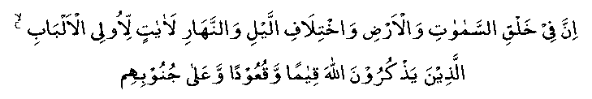

A certain person asked A'ishah (RA): "Tell me something noteworthy concerning Nabi (Sallallahu Alayhi Wasallam)."
She answered: "There was nothing which was not unusual about him. Everything he did was noteworthy. One night he came and lay down beside me. After sometime, he got up saying, 'Now let me pray to my Lord, the Sustainer'."
With this, he stood up in Salaah, humbling himself before his Creator with such sincerity that tears rolled down his cheeks to his beard and on to his chest. He then bowed for Ruku' and Sajdah, and his tears flowed down as fast as before and after raising his head from his Sajdah, he continued weeping in this manner till Hadhrat Bilal (RA) announced the approach of Fajr Salaah.
I pleaded with him: "O, Nabi of Allah! you are sinless, as Allah (RA) has in His kindness, forgiven your each and every sin (even if committed) in the past and which may happen in the life to come (XLVIII: 2) and still you grieve so much."
Nabi (Sallallahu Alayhi Wasallam) replied: "Why should I then not be a grateful slave of Allah Ta’ala?" He then added, "Why should I not be praying like this when Allah Ta’ala has today revealed to me these verses?"

Verily in the creation of the Heavens and the Earth, and in the alternating of night and day, are signs (of His Sovereignty) for men of understanding. They who remember Allah, standing, sitting and reclining . . . (S3:V190-191)
It has been reported in many Ahaadith that Nabi (Sallallahu Alayhi Wasallam) feet would get swollen because of his very long ra-kaats in Salaah. People tried to reason with him: "O, Nabi of Allah! You are sinless and you still labour so hard!"
He would reply: "Should I not be a grateful slave of my Allah Ta’ala, then?"